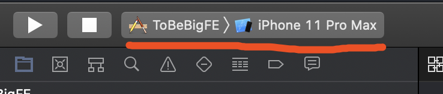

《成为大前端》1.2 WebView加载网页 - UIViewController和WebView加载网页（iOS）
UIViewController
UIViewController 类是 iOS 应用的关键组件，对于前端来说，可以简单认为一个UIViewController就是一个HTML tab页面，只不过它还包含iOS特性的功能。
目前先了解以下几点：
- 生命周期：好比Vue/React的生命周期方法
- RootView：视图根节点
生命周期
目前先了解以下生命周期方法即可
- loadView: view创建代码写在这里
- viewDidLoad：view加载完毕，view的操作在这
- viewWillAppear：view即将出现，还未渲染在屏幕上
- viewDidAppear： view已经出现，已经渲染在屏幕上
- viewWillDisappear：view即将消失
- viewDidDisappear：view已经消失
RootView
每一个UIViewController都有一个根节点：
1 | class ViewController: UIViewController { |
上面要注意的是，self.view在loadView中初始化，在viewDidLoad中访问
如果没有override loadView，默认是个空的UIView，viewDidLoad任然可以使用
WebView加载网页
1 | import UIKit |
运行
选择一个模拟器运行，模拟器启动需要几分钟时间，你也可以使用真机测试。

效果图：
到这就完成了WebView加载网页。